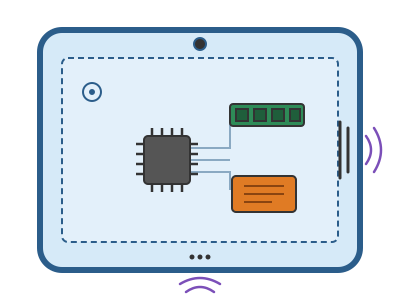

Bestandteile eines Computers
Mit einem KI-Tutor lernen
Ein KI-Tutor erklärt dir diese Seite und hilft dir bei den Aufgaben. Wähl deinen Assistenten:
Mit Claude öffnen Mit ChatGPT öffnen Mit Mistral Vibe öffnen
Du nutzt dein eigenes Konto beim Anbieter. Der Assistent ist kein Angebot von lernapps.net: lernapps liefert nur Inhalte und Aufgaben. Die Wahl gilt für alle Seiten, nur auf diesem Gerät.
Station 4: der gläserne Computer
An Station 3 hast du ein Programm bedient. Von Station 2 weißt du: Hardware kannst du anfassen. Aber was steckt eigentlich in einem Tablet? An Station 4 steht ein Tablet aus Glas. Nach ihm heißt die ganze Ausstellung: der gläserne Computer. Jona sagt: „Hier kannst du hineinschauen. Rate mal, wo das Tablet denkt.“
Auf dieser Seite lernst du die wichtigsten Teile eines Computers kennen und was jedes Teil tut.
Aufgabe
Lösung
Ein kleiner Chip im Innern richtige Antwort
Dieser Chip heißt Prozessor. Er rechnet, und zwar sehr schnell.
Der Bildschirm
Der Bildschirm zeigt nur, was im Innern ausgerechnet wurde.
Der Akku
Der Akku gibt allen Teilen Strom. Rechnen kann er nicht.
Im Innern sitzt der Prozessor. Er rechnet für alle Programme des Tablets.
Ein Blick ins Innere

© CC-BY-4.0- Prozessor
- Arbeitsspeicher
- Festspeicher
- Touchscreen
- Kamera
- Mikrofon
- Lautsprecher
Der gläserne Computer. Die Zahlen gehören zu den Namen darunter: 1 bis 3 sind innen, 4 bis 7 außen.
- Daten
Alles, womit ein Computer arbeitet, zum Beispiel Zahlen, Buchstaben, Bilder und Töne.
- Eingabegerät
Ein Teil, mit dem Daten in den Computer kommen, zum Beispiel Kamera, Mikrofon oder Tastatur.
- Ausgabegerät
Ein Teil, mit dem der Computer dir etwas zeigt, vorspielt oder druckt, zum Beispiel Bildschirm, Lautsprecher oder Drucker.
| Teil | Was es tut (wie in deinem Zimmer) |
|---|---|
| Prozessor | rechnet mit den Daten (wie du selbst beim Arbeiten) |
| Arbeitsspeicher | hält, woran gerade gearbeitet wird (wie dein Schreibtisch) |
| Festspeicher | hebt Fotos, Apps und Texte auf, auch ohne Strom (wie dein Schrank) |
Der Vergleich hat eine Grenze: Dein Schreibtisch bleibt voll, wenn das Licht ausgeht. Der Arbeitsspeicher vergisst alles, sobald der Strom weg ist. Und der Prozessor denkt nicht selbst nach. Er macht genau das, was das Programm sagt.
Aufgabe
Lösung
Im Arbeitsspeicher richtige Antwort
Ungespeichertes liegt im Arbeitsspeicher. Ohne Strom ist er leer, darum ist das Bild weg.
Im Festspeicher
In den Festspeicher kommt das Bild erst beim Speichern. Dann wäre es noch da.
Im Prozessor
Der Prozessor rechnet nur. Dauerhaft aufheben kann er nichts.
Im Bildschirm
Der Bildschirm zeigt das Bild nur an. Die Daten liegen im Innern.
Was du noch nicht gespeichert hast, liegt nur im Arbeitsspeicher.
- Prozessor
Der Chip, der im Computer rechnet und die Befehle der Programme ausführt.
- Arbeitsspeicher
Hält die Daten, an denen der Prozessor gerade arbeitet. Ohne Strom ist er leer.
- Festspeicher
Hebt Daten dauerhaft auf, auch wenn das Gerät aus ist, zum Beispiel Fotos und Apps.
Beispiel: Selin nimmt ein Lied auf
Welche Teile helfen mit?
- Selin singt. Das Mikrofon nimmt ihre Stimme auf. Es ist ein Eingabegerät.
- Die Aufnahme liegt im Arbeitsspeicher, solange die App mit ihr arbeitet.
- Der Prozessor macht die Aufnahme etwas lauter.
- Selin tippt auf „Speichern“. Jetzt liegt das Lied im Festspeicher.
- Der Lautsprecher spielt das Lied ab. Er ist ein Ausgabegerät.
Üben an der Station
Aufgabe
Lösung
Richtige Antwort: 1 – Prozessor; 2 – Arbeitsspeicher; 3 – Festspeicher; 4 – Touchscreen; 5 – Kamera; 6 – Mikrofon; 7 – Lautsprecher
Innen sitzen Prozessor (grauer Chip), Arbeitsspeicher (grüner Riegel) und Festspeicher (oranges Kästchen). Außen sind Touchscreen, Kamera, Mikrofon und Lautsprecher.
Aufgabe
Lösung
Richtige Antwort: Prozessor – rechnet mit den Daten; Arbeitsspeicher – hält, woran gerade gearbeitet wird; Festspeicher – hebt Daten auf, auch ohne Strom; Kamera – bringt ein Bild in den Computer; Lautsprecher – spielt Töne für dich ab
Strom gibt der Akku. Er gehört zu keinem der fünf Teile hier.
Aufgabe
Lösung
Richtige Antwort: Die Aussage stimmt nicht.
Falsch. Das Foto ist gespeichert, also liegt es im Festspeicher. Der hebt Daten auch ohne Strom auf.
Geschafft: Der gläserne Computer hat seine Namensschilder zurück. An der nächsten Station schaust du, wie die Teile zusammenarbeiten.
Fehler gefunden oder eine Idee für diese App?